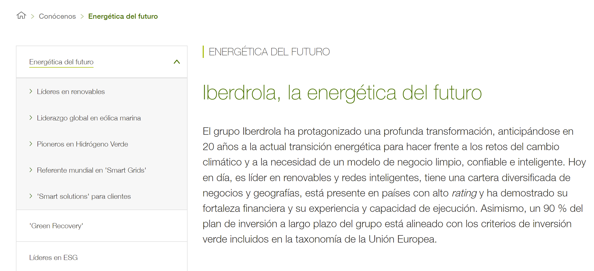

Historia de Iberdrola
Este es un pequeño extracto de la web oficial de la parte "Energética del Futuro". Si te interesa lo que está leyendo,
puedes leer más en
iberdrola.com/conocenos :
Iberdrola, la energética del futuro
El grupo Iberdrola ha protagonizado una profunda transformación, anticipándose en 20 años a la actual transición energética para hacer frente a los retos del cambio climático y a la necesidad de un modelo de negocio limpio, confiable e inteligente. Hoy en día, es líder en renovables y redes inteligentes, tiene una cartera diversificada de negocios y geografías, está presente en países con alto rating y ha demostrado su fortaleza financiera y su experiencia y capacidad de ejecución. Asimismo, un 90 % del plan de inversión a largo plazo del grupo está alineado con los criterios de inversión verde incluidos en la taxonomía de la Unión Europea.
